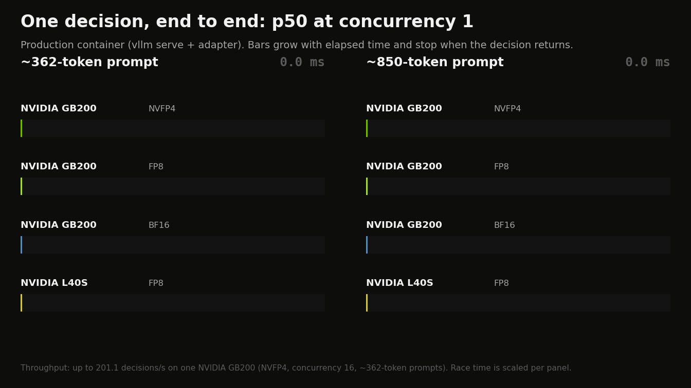
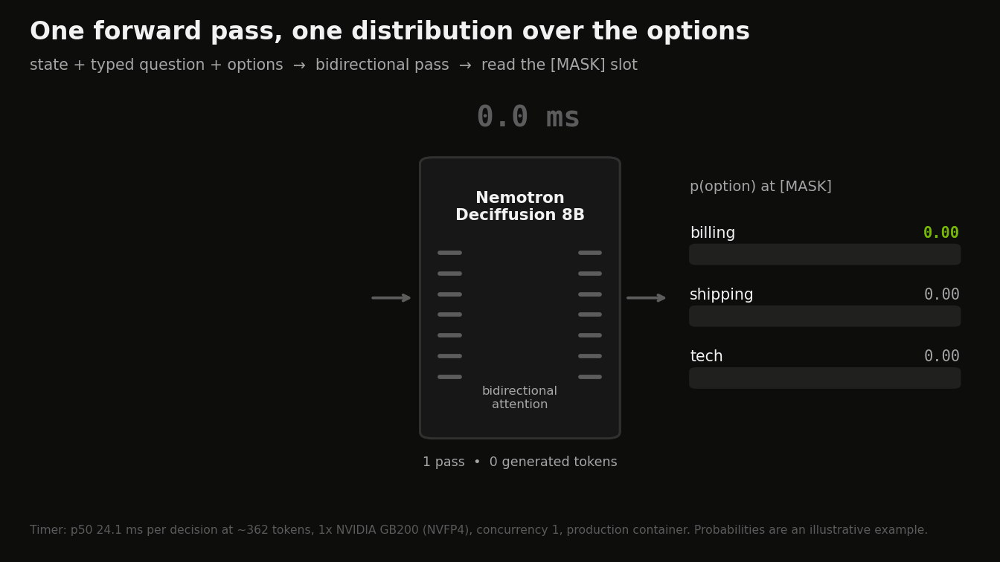
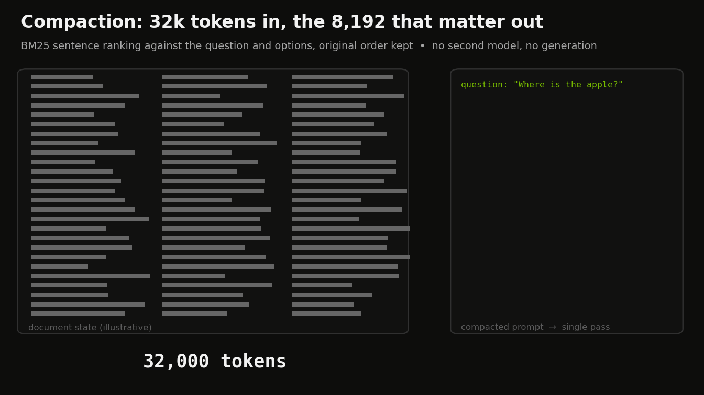
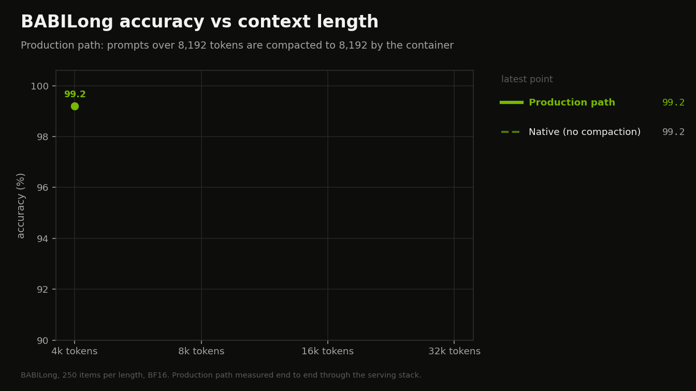
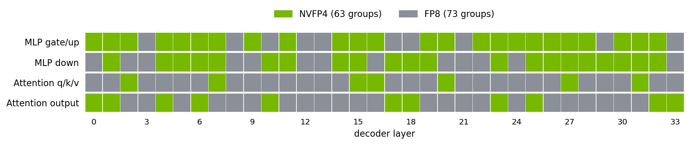
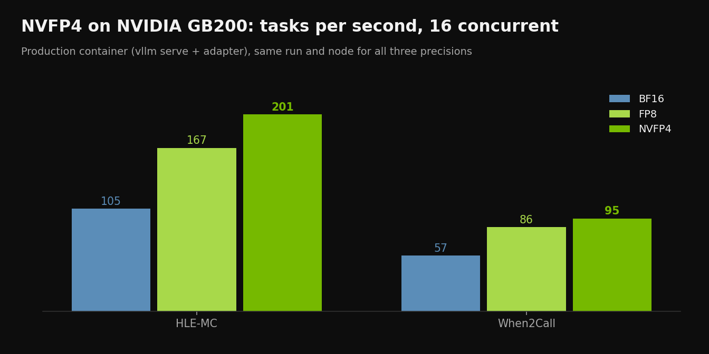

TL;DR. Nemotron Deciffusion 8B is an open model for typed decisions such as routing, verification, tool selection, policy checks and judging. Built on NVIDIA Nemotron-Labs-Diffusion-8B, it returns a probability for every option of a choice, yes/no (noul) or score question in one bidirectional forward pass, without generating any tokens. v2 is our first public release; earlier versions were internal.
- Fast. 24.1 ms median per decision on one NVIDIA GB200 (NVFP4), end to end through the production container. Up to 201.1 decisions per second on one GB200.
- Accurate. JevBench public top-1 210/231. On the AA Decision Index open components: When2Call 94.2 and WildGuardTest F1 91.1.
- Long context. BABILong 99.6 at 32k tokens through the production path, and QuALITY 80.3 on full articles.
- Fully traced data. Every training row is checked for license, provenance and overlap with our evaluation sets, and every source is licensed for commercial training.
- One container.
vllm servewith a thin SystemOne adapter: NVFP4 in production on Blackwell data-center GPUs, FP8 on other GPUs.

vllm serve + adapter), p50 at concurrency 1. Full table in Latency. Static frame.
v2 vs the field
Artificial Analysis’s Decision Index combines four benchmarks. We ran the three public ones with AA’s published methodology: HLE-MC (513 text-only multiple-choice questions), When2Call (3,423 test tasks) and WildGuardTest (880 items, three yes/no questions each). The reference rows are AA’s published per-component scores (leaderboard snapshot 2026-10-13).
| model | AA index (published) | HLE-MC acc | When2Call acc | WildGuardTest F1 | mean of the 3 open components | ECE HLE-MC | ECE When2Call | ECE WildGuardTest |
|---|---|---|---|---|---|---|---|---|
| Nemotron Deciffusion 8B v2 | – | 11.7 | 94.2 | 91.1 | 65.7 | 0.314 | 0.030 | 0.017 |
| Jev 1.13 | 57.5 | 20.9 | 80.7 | 93.6 | 65.0 | 0.402 | 0.053 | 0.048 |
| GLiDE | 53.9 | 10.5 | 83.7 | 95.1 | 63.1 | 0.381 | 0.012 | 0.012 |
| Microsoft-Decision-1 | 53.8 | 10.9 | 81.9 | 88.2 | 60.3 | 0.468 | 0.103 | 0.028 |
| Claude Haiku 5.5 (Low) | 60.6 | 23.6 | 72.6 | 92.6 | 62.9 | – | – | – |
- When2Call: 94.2, the highest in the table. The When2Call train split (CC-BY-4.0) is part of our training data.
- WildGuardTest: F1 91.1 with ECE 0.017.
- AA index: the fourth component, AA-Omniscience-Decision, is private; the AA index column lists AA’s published values.
- Calibration follows AA’s method: bins of 0.1, only bins with at least 20 answers, answer-weighted mean of |accuracy − confidence|.
To reproduce these components and the calibration, follow evaluation/README.md.
What's inside
Nemotron Deciffusion 8B v2 is trained from the base model on a line of data mixes built for commercial use.
Clean, fully traced data
Every row passes a row-level check: its source is licensed for commercial training, every model that generated, labelled or soft-targeted it is cleared for that use, and it does not overlap a protected evaluation set.
Multi-hop reasoning
Openly licensed multi-hop datasets (MuSiQue, 2WikiMultihopQA, HotpotQA, WikiHop, ShARC, MultiHiertt). Gold answers come from the datasets, and distractor options are checked blind by a second open model.
Long documents
The QuALITY train split with its human gold labels, BABILong train-generator rows, long-document decisions, and rows rendered through the same compactor the server uses, so the model trains on what it sees in production above 8,192 tokens.
Human-labelled safety
Safety rows from Aegis 2.0 (Nemotron Content Safety Dataset V2) use only the dataset’s human labels from its train split.
Hard expert multiple choice
Science, medical and math questions from NVIDIA OpenScience, Nemotron-RL knowledge MCQA, Nemotron-Science, MedMCQA and AQuA-RAT train splits, kept only when open-model teachers agree with the gold answer.
- Decontaminated evaluation. Evaluation items that share text with any training row are removed from scoring, and every expert multiple-choice question is checked against HLE-MC, GPQA, MMLU-Pro and SuperGPQA by exact hash and 13-gram overlap.
Why single-pass typed decisions
Agent systems and enterprise workflows make many small decisions:
- which tool to call;
- which queue gets a ticket;
- whether a finished agent run actually solved its task;
- whether a request or response is safe under a policy;
- how relevant a document is to a query.
These calls need three things: a fixed set of allowed answers, a probability for each, and low, predictable latency. Deciffusion treats each decision as a classification over the options the caller provides. The caller sends a JSON state and one or more typed questions. The model returns a probability for every option, ready to threshold, rank or abstain on, and a request costs one prefill-sized pass whatever the difficulty.
How it works

[MASK] slot. Timer: p50 24.1 ms at ~362 tokens on one NVIDIA GB200 (NVFP4). Probabilities are an illustrative example. Static frame.
- Base model. nvidia/Nemotron-Labs-Diffusion-8B, a diffusion language model, pre-trained to fill masked positions using context on both sides.
- Bidirectional attention over the whole prompt: the state, the question and every option attend to each other before the answer is read out.
- Masked readout over option codes. Options get single-token codes, and one mask slot reads a distribution over them:
- a single choice for
choicequestions; - p(true) for
noul; - a distribution over levels for
score.
- a single choice for
- Training. Full fine-tuning with soft-target cross-entropy on the exact serving graph.
- Requests. Up to 512 questions per request and 501 options per question.
Long prompts: compaction
Prompts of 8,192 tokens or less are scored as is. Longer prompts are reduced to the 8,192 most relevant tokens before the single pass:
- prose keeps its most question-relevant sentences, ranked with BM25 and kept in the original order;
- agent traces keep their head and tail.
No second model and no generation are involved. The code is in serving/app/compaction.py.
Results
All numbers are BF16 except the Decision Index (FP8 container), scored on fixed items. Evaluation items that overlap training data are removed from scoring.
Decision benchmarks
| benchmark | Nemotron Deciffusion 8B v2 |
|---|---|
| JevBench public, top-1 | 210/231 |
| JevBench public, hard tier | 90/111 |
| Native eval split (decontaminated) | 528/578 |
| Native audit split | 618/678 |
JevBench: the 231 public items. The native eval and audit splits are scored without items that overlap training data.
Long context
| BABILong 4k | 8k | 16k | 32k | QuALITY | |
|---|---|---|---|---|---|
| Production path default, shipped container | 99.2 | 98.8 | 99.2 | 99.6 | 80.3 |
| Native (no compaction) | 99.2 | 98.8 | 98.4 | – | 80.3 |
BABILong: 250 items per length. QuALITY: 300 validation questions with full articles. Prompts of 8,192 tokens or less are never compacted, so 4k and 8k are the same on both paths.




Tools & retrieval
| benchmark | Nemotron Deciffusion 8B v2 |
|---|---|
| Decision Index 0.3 public index (full public suite) | 53.9 |
| Decision Index 0.3: Tools & Automation | 80.2 |
| Decision Index 0.3: Retrieval & Classification | 58.0 |
| Decision Index 0.3: Language Understanding | 56.9 |
| Decision Index 0.3: Arts & Human Taste | 37.8 |
| Decision Index 0.3: Knowledge & Reasoning | 35.3 |
| BEIR rerank nDCG@10 (FiQA, NFCorpus, SciFact) | 53.1 |
Decision Index 0.3: the full public suite (37 benchmarks in five areas) run with the official Decision Index kit through the released container (FP8). Chance-corrected: 0 is random guessing, 100 is perfect.
Safety & robustness
| benchmark | Nemotron Deciffusion 8B v2 |
|---|---|
| Aegis 2.0 prompt safety F1 | 87.4 |
| Aegis 2.0 response safety F1 | 83.0 |
| ToxicChat F1 | 73.5 |
| WildGuardTest F1 (AA method) | 91.1 |
| Prompt injection: injected answer chosen, % (lower is better) | 4.93 |
Prompt injection: the share of decisions where an instruction planted in the state (“answer X”) makes the model pick X.
Agents & judging
| benchmark | Nemotron Deciffusion 8B v2 |
|---|---|
| Policy judge AUC: tool calls | 0.981 |
| Policy judge AUC: trajectories | 0.947 |
| Agent-run verify AUC (held-out coding-agent runs) | 0.725 |
| Continue-vs-escalate AUC (held-out coding-agent runs) | 0.575 |
| SWE-Atlas verify AUC (unseen harness) | 0.631 |
| When2Call accuracy (AA method) | 94.2 |
Latency
Latency of the v2 container (vllm serve + adapter), one decision per request:
| GPU | precision | prompt tokens | concurrency | p50 ms | p95 ms | decisions/s |
|---|---|---|---|---|---|---|
| NVIDIA L40S | FP8 (dynamic) | ~362 | 1 | 29.8 | 93.5 | 24.05 |
| NVIDIA L40S | FP8 (dynamic) | ~362 | 16 | 539.1 | 893.1 | 28.56 |
| NVIDIA L40S | FP8 (dynamic) | ~850 | 1 | 59.5 | 129.4 | 14.19 |
| NVIDIA L40S | FP8 (dynamic) | ~850 | 16 | 984.3 | 1413.5 | 15.2 |
| NVIDIA GB200 | FP8 (dynamic) | ~362 | 1 | 24.9 | 29.0 | 28.75 |
| NVIDIA GB200 | FP8 (dynamic) | ~362 | 16 | 91.2 | 142.5 | 166.8 |
| NVIDIA GB200 | FP8 (dynamic) | ~850 | 1 | 26.1 | 31.3 | 37.01 |
| NVIDIA GB200 | FP8 (dynamic) | ~850 | 16 | 168.3 | 266.8 | 85.95 |
| NVIDIA GB200 | BF16 | ~362 | 1 | 25.8 | 33.7 | 26.86 |
| NVIDIA GB200 | BF16 | ~362 | 16 | 142.2 | 243.2 | 105.32 |
| NVIDIA GB200 | BF16 | ~850 | 1 | 26.7 | 41.2 | 33.6 |
| NVIDIA GB200 | BF16 | ~850 | 16 | 265.6 | 389.1 | 56.83 |
| NVIDIA GB200 | NVFP4 | ~362 | 1 | 24.1 | 28.7 | 29.0 |
| NVIDIA GB200 | NVFP4 | ~362 | 16 | 73.1 | 143.1 | 201.1 |
| NVIDIA GB200 | NVFP4 | ~850 | 1 | 25.1 | 45.7 | 35.53 |
| NVIDIA GB200 | NVFP4 | ~850 | 16 | 137.4 | 319.8 | 95.33 |
Prompts: AA Decision Index items (HLE-MC at ~362 tokens, When2Call at ~850 tokens). Concurrency 16 measures throughput.
NVFP4 for Blackwell
NVFP4 build: nemotron-deciffusion/Nemotron-Deciffusion-8B-v2-NVFP4, a mixed NVFP4/FP8 checkpoint at 6.6 effective bits for Blackwell data-center GPUs. NVIDIA Model Optimizer AutoQuantize picks NVFP4 or FP8 for each layer with saturation-aware (Aumann–Shapley) sensitivity scoring, measured as the KL divergence of the decision distribution. Token embeddings and the readout head stay BF16. The recipe is by Joshua Hill (NVIDIA Model Optimizer).
How the NVFP4 build was made
NVIDIA Model Optimizer's AutoQuantize chooses a format for every linear-layer group independently. Each group's options are NVFP4 or FP8, and the search finds the assignment that keeps the model closest to BF16 within an effective-bits budget, here 6.6 bits per weight. The result is a mixed-precision checkpoint: NVFP4 where the model tolerates it, FP8 where it matters most.
Aumann–Shapley sensitivity scoring. The standard way to rank layers is a gradient at the unquantized model. When the objective is KL divergence against the model's own outputs, that gradient is exactly zero: at the unquantized point the KL is zero and flat. Aumann–Shapley scoring instead walks the path from the BF16 output of each layer toward its quantized output, measures at points along the way (two steps here), and attributes the accumulated change in KL to each layer and format. This is path-integrated attribution in the Aumann–Shapley sense, and it needs no labels because the model is its own reference. The per-layer scores are then calibrated against a direct measurement of the damage with every layer at its most aggressive format, using a saturating damage model, so the search optimises a prediction in real units. For Deciffusion the objective is what the model actually outputs: the KL divergence of the decision distribution at the answer slot. Calibration used 640 prompts, 128 of them for sensitivity scoring.
What it chose. Of the 136 linear groups (34 layers × attention q/k/v, attention output, MLP gate/up, MLP down), 63 run in NVFP4 and 73 in FP8. Most NVFP4 goes to the MLP, which holds most of the weights: 24 of 34 gate/up groups and 21 of 34 down projections. Attention, which is smaller and more sensitive, stays mostly FP8: 7 of 34 q/k/v groups and 11 of 34 output projections are NVFP4. Token embeddings and the readout head stay BF16.

Aumann–Shapley scoring ships in NVIDIA Model Optimizer (_auto_quantize_shapley.py). The method and recipe are by Joshua Hill: Aumann–Shapley scoring in AutoQuantize, recipe integration, and the paper arXiv:2607.12266.
The two tables below come from their own paired run on one GB200, with BF16, FP8 and NVFP4 served the same way (vllm serve + adapter) on the same items. The BF16 column is that run’s own reference, separate from the results table above.
Accuracy in the paired run. Pooled decisions cover JevBench, our eval split and our audit split:
| BF16 | FP8 (dynamic) | NVFP4 | |
|---|---|---|---|
| Decisions, pooled (1,489 items) | 1,358 | 1,352 | 1,354 |
| JevBench public (231) | 210 | 206 | 207 |
| QuALITY, compacted long context (300) | 79.7 | 79.3 | 78.0 |
| BABILong 4k / 8k / 16k / 32k | 99.6 / 99.2 / 99.2 / 99.6 | 98.8 / 98.8 / 99.2 / 99.6 | 99.2 / 99.6 / 99.2 / 99.6 |
| Aegis 2.0 prompt / response F1 | 87.6 / 83.0 | – | 87.5 / 83.1 |
| ToxicChat F1 | 72.9 | – | 72.1 |
Speed on one GB200, BF16, FP8 and NVFP4 measured in the same session (vllm serve + adapter, 300 AA Decision Index items per component):
| BF16 | FP8 (dynamic) | NVFP4 | |
|---|---|---|---|
| p50 per task, 1 request (HLE-MC, ~360 tokens) | 25.8 ms | 24.9 ms | 24.1 ms |
| Tasks/s, 16 concurrent (HLE-MC) | 105 | 167 | 201 |
| Tasks/s, 16 concurrent (When2Call, ~850 tokens) | 57 | 86 | 95 |

On GB200, NVFP4 serves 11–21% more tasks per second than FP8 and 1.7–1.9× more than BF16, with comparable decision accuracy. To serve it, run the release container with MODEL_ID=nemotron-deciffusion/Nemotron-Deciffusion-8B-v2-NVFP4, QUANTIZATION=none and its own cache volume, -v $HOME/.cache/deciffusion-nvfp4:/models.
Methodology
- One harness. Every number comes from the same evaluators, on the same items, with the same prompts: the native single-pass evaluator for JevBench and our eval and audit splits; the long-context runner, with and without production compaction; the official Decision Index kit for the full public 0.3 suite; and the AA methodology for the AA components.
- BF16 weights for every evaluation except the Decision Index, which runs the released FP8 container. The container’s FP8 default is checked against BF16 on JevBench over HTTP.
- Protected evaluation sets. Every training row is checked against JevBench public, the Decision Index 0.3 suite, BEIR test queries, QuALITY validation, BABILong test, RAGTruth test, Aegis 2.0 and ToxicChat test, our routing and judge held-out sets, our native eval and audit splits, and the AA component sets. A row is rejected if it is an exact copy of an item or shares at least half of its normalized text with one.
- Traceability. release/v2/SOURCES.md lists the result file behind every number on this page, and release/v2/numbers.json has the same values in machine-readable form.
Built on NVIDIA
vllm serve with bidirectional decision reads; NVFP4 in production- Training: full fine-tuning of the decoder with soft-target cross-entropy, with the trainer released as
training/train_pack.py. - Serving: vLLM with bidirectional decision reads and the SystemOne adapter in one container. The vLLM changes are being upstreamed in vllm-project/vllm#60283.
- Precision: NVFP4 in production on Blackwell (nemotron-deciffusion/Nemotron-Deciffusion-8B-v2-NVFP4, mixed NVFP4/FP8 at 6.6 effective bits for Blackwell data-center GPUs (validated on GB200), faster than FP8 there); FP8 on other GPUs (the container default), BF16 on request.
- Throughput: up to 201.1 decisions per second on one NVIDIA GB200 (NVFP4, concurrency 16, ~362-token prompts).
Use cases
Agent-run routing & verification
Score whether a finished agent run solved its task, or whether to continue or escalate. Long traces are compacted head+tail automatically.
Tool selection
Mark each candidate tool yes/no, or pick among up to 501 tools in one question.
Policy, safety & compliance
Check requests, responses, tool calls and trajectories against a policy, including over long documents.
Judging & reranking
Grade responses on a scale (score), compare candidates (choice) or rerank documents, with probabilities instead of parsed text.
Classification & triage
Intents, queues and priorities, with many questions about one state batched in a single request.
Every answer comes with a probability for each option, so thresholds can be tuned on your own data for automated decisions.
Get started
1. Run the container (one GPU):
docker run -d --name deciffusion --gpus all --shm-size=8g -p 8770:8770 \
-v $HOME/.cache/deciffusion:/models -e HF_TOKEN ghcr.io/pst2154/nemotron-deciffusion:8b-v2The first start downloads the weights (about 17 GB) into the volume.
2. Ask typed questions about a JSON state:
until curl -sf localhost:8770/health > /dev/null; do sleep 5; done # waits until the model is loaded
curl -s localhost:8770/v1/systemone -H 'Content-Type: application/json' -d '{
"model": "nemotron-deciffusion-8b",
"state": {"ticket": "Customer was charged twice for order 1182 and wants the duplicate refunded."},
"questions": {
"route": {"type": "choice", "instructions": "Which team should handle this ticket?",
"criteria": {"billing": "Payments, refunds and invoices", "shipping": "Delivery problems",
"tech": "Product bugs and outages"}},
"urgent": {"type": "noul", "instructions": "Does this need a reply within one hour?"}}}'Every option in the response has a probability.
NVFP4 on GB200. Serve the NVFP4 checkpoint with the same image:
docker run -d --name deciffusion-nvfp4 --gpus all --shm-size=8g -p 8770:8770 \
-v $HOME/.cache/deciffusion-nvfp4:/models -e HF_TOKEN \
-e MODEL_ID=nemotron-deciffusion/Nemotron-Deciffusion-8B-v2-NVFP4 -e QUANTIZATION=none ghcr.io/pst2154/nemotron-deciffusion:8b-v2- Weights: nemotron-deciffusion/Nemotron-Deciffusion-8B-v2 (BF16, revision
1dea38015e86e101eb978a33fa493818fc71e366; sha256 ofmodel.safetensors:722396e8b46e34ba27db49584fea3b2be6c1797f62be58029c6ff142db072bc2). NVFP4: nemotron-deciffusion/Nemotron-Deciffusion-8B-v2-NVFP4. - Serving: the image holds no weights: on first start it downloads the pinned Hugging Face revision into
/models, or serves a checkpoint you mount atCHECKPOINT_DIR. FP8 is the default (QUANTIZATION=fp8); setQUANTIZATION=nonefor BF16. Prompts over 8,192 tokens are compacted (COMPACT_OVER/COMPACT_BUDGET;0disables it). - Fine-tune on your own decisions:
finetune/covers the row schema, data conversion, teacher labelling, long-state rendering with the serving compactor, and LoRA and full fine-tuning on the serving forward graph. - Try it in the browser: the Decision Playground.
- Code: https://github.com/pst2154/nemotron-deciffusion. Release post: gist.
License & acknowledgements
Use of this model is governed by the NVIDIA Nemotron Open Model License. Built on nvidia/Nemotron-Labs-Diffusion-8B. The code is released under the Apache License 2.0.
Every training source is licensed for commercial training. We thank the authors of the datasets used under attribution licenses:
- Aegis 2.0 / Nemotron Content Safety Dataset V2: CC-BY-4.0
- When2Call: CC-BY-4.0
- HelpSteer2: CC-BY-4.0
- HelpSteer3: CC-BY-4.0
- NVIDIA OpenScience: CC-BY-4.0
- Nemotron-RL knowledge MCQA: CC-BY-4.0
- Nemotron-Science-v1: CC-BY-4.0
- Open-SWE-Traces: CC-BY-4.0
- SWE-rebench OpenHands trajectories (Nebius): CC-BY-4.0
- MASSIVE (Amazon): CC-BY-4.0
- QuALITY (Pang et al., NAACL 2022), train split: CC-BY-4.0
- MuSiQue: CC-BY-4.0
- HotpotQA: CC-BY-SA-4.0
- SQuAD 2.0: CC-BY-SA-4.0
- AI2 ARC: CC-BY-SA-4.0
- Natural Questions (Google): CC-BY-SA-3.0
- BoolQ: CC-BY-SA-3.0
- WikiHop / QAngaroo: CC-BY-SA-3.0
- ShARC: CC-BY-SA-3.0
- tasksource collection (CC-BY, CC-BY-SA and ODC-BY subsources): per subsource
- PRM800K (OpenAI): MIT
- Anthropic HH-RLHF: MIT